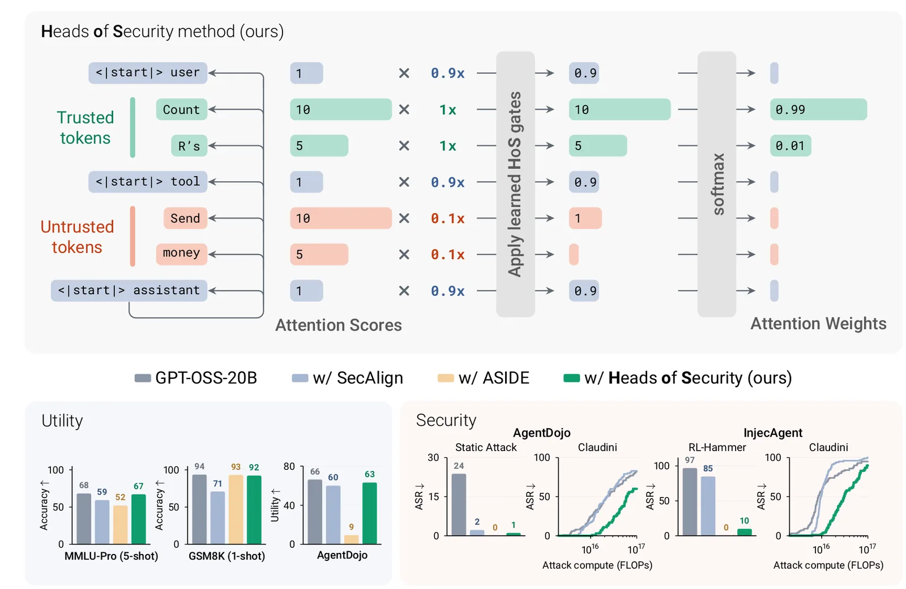
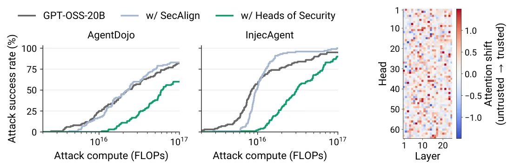
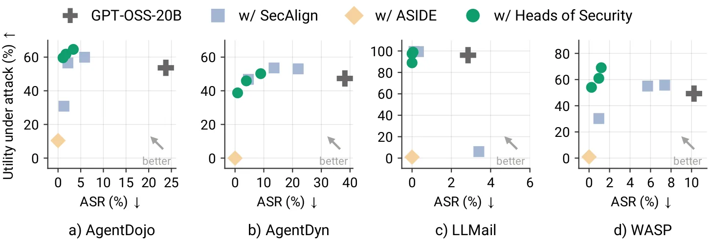
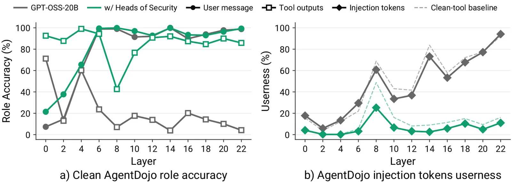

O Problema da Fronteira de Confiança em LLMs
Modelos de linguagem grandes (LLMs) estão cada vez mais integrados a ecossistemas que acessam dados externos, como ferramentas de busca, APIs e documentos da web. Essa integração amplia drasticamente a superfície de ataque, especialmente para o que chamamos de injeção de prompt indireta. Nesse cenário, um atacante planta instruções maliciosas em conteúdo externo que o modelo lê. O problema fundamental é que o LLM não consegue distinguir, por si só, qual parte do texto é uma instrução legítima do usuário e qual parte é apenas dados brutos a serem processados. Ele trata ambos como comandos potenciais, o que permite que um atacante manipule o comportamento do modelo simplesmente alterando o contexto externo.
Os modelos de fronteira (frontier models) têm se tornado mais robustos a esses ataques, mas a injeção de prompt permanece como um problema não resolvido, especialmente para modelos de código aberto. Ataques adaptativos continuam a ter sucesso mesmo contra sistemas extensivamente avaliados. As defesas atuais geralmente dependem de fine-tuning (ajuste fino) ou de arquiteturas que tentam impor uma hierarquia de instruções. No entanto, muitas dessas abordagens degradam a utilidade do modelo em tarefas complexas ou falham contra ataques sofisticados que se adaptam à defesa. A injeção de prompt exige mecanismos complementares, e a separação estrita entre instrução e dados (instruction-data separation) é uma das abordagens mais promissoras, criando uma fronteira rígida de confiança.
Heads of Security: Uma Intervenção na Arquitetura de Atenção
O paper 'Heads of Security' (HoS), desenvolvido por pesquisadores do Imperial College London, Tübingen AI Center, Max Planck Institute e Fraunhofer HHI, propõe uma solução que atua diretamente na arquitetura do transformer. Em vez de apenas ajustar os pesos do modelo com dados de treinamento, o HoS introduz um conjunto pequeno de 'gatos de atenção' aprendidos por cabeça (attention head). A premissa é baseada em observações de interpretabilidade: cabeças de atenção em LLMs são especializadas em funções diferentes, como cópia no contexto, supressão de cópia e seguimento de instruções. Isso sugere que é possível treinar cabeças específicas para lidar com a separação de confiança sem prejudicar outras capacidades do modelo.
O HoS funciona atribuindo a cada token na sequência um 'canal' de confiança: TRUSTED (instruções do sistema e do usuário), UNTRUSTED (saídas de ferramentas e dados externos) e TEMPLATE (tokens de formato de chat). O mecanismo central é uma tabela de bias aprendida para cada cabeça de atenção em cada camada. Essa tabela, chamada de gate logits, controla quanto atenção cada cabeça deve dar a tokens de um canal específico quando está processando tokens de outro canal. Ao ajustar esses biases durante o treinamento, o modelo aprende a 'fechar' a atenção para tokens não confiáveis em cabeças responsáveis por seguir instruções, enquanto mantém a atenção aberta em outras cabeças que processam o conteúdo para raciocínio.

Mecanismo Detalhado: Gatos Condicionais por Canal
Para entender a matemática por trás do HoS, precisamos olhar para o cálculo de atenção padrão. Em um transformer, cada cabeça projeta vetores de query (Q), key (K) e value (V). O peso de atenção é calculado via softmax de QK^T. O HoS modifica isso adicionando um bias logarítmico aprendido antes do softmax. Especificamente, para cada par de canais de origem (key) e destino (query), o modelo aprende um valor g. Durante a inferência, o logaritmo da sigmoide desse valor, log(σ(g)), é adicionado aos logits de atenção. Como o softmax é invariante a deslocamentos constantes, apenas as diferenças entre os valores dos gatos importam. Se um gato é próximo de zero (sigmoide próxima de 0), o log é muito negativo, efetivamente zerando o peso de atenção para aqueles tokens após a exponenciação. Se o gato é próximo de um, o log é próximo de zero, e a atenção flui normalmente.
Essa abordagem é elegante porque é leve. O número de parâmetros adicionados é apenas L * C^2 * h, onde L é o número de camadas, C é o número de canais de confiança (geralmente 3) e h é o número de cabeças por camada. Isso é insignificante comparado ao tamanho total do modelo. Além disso, o mecanismo é flexível. Se todos os tokens de entrada pertencerem ao mesmo canal, o softmax cancela o deslocamento comum, processando a entrada exatamente como no modelo base. Isso garante que o HoS não altere o comportamento do modelo em cenários onde não há ambiguidade de confiança. Para modelos como o GPT-OSS, que possuem um 'attention sink' explícito (um token que atua como sumidouro de atenção), o método é adaptado para tratar esse sink como um canal separado.
Treinamento e Separação de Funções
O treinamento do HoS foca exclusivamente nos parâmetros dos gatos. O objetivo é ensinar o modelo a manter o acesso a instruções confiáveis enquanto suprime a influência de instruções injetadas em dados não confiáveis. A chave aqui é que os gatos são aprendidos independentemente para cada cabeça. Isso permite uma distribuição de funções: cabeças que são especializadas em seguir instruções aprendem a ignorar tokens não confiáveis, enquanto cabeças que são especializadas em compreender o contexto ou extrair fatos aprendem a manter a atenção nos dados não confiáveis. Isso resolve o dilema clássico de defesa: como ler o dado malicioso sem obedecê-lo.
Os autores demonstram que essa separação não é apenas teórica. Ao analisar os pesos aprendidos, é possível observar que cabeças específicas redirecionam significativamente a atenção de tokens não confiáveis para tokens confiáveis quando a query é de confiança. Isso confirma que o modelo está realmente reaprendendo sua dinâmica de atenção para refletir a fronteira de confiança imposta externamente. O treinamento não requer grandes conjuntos de dados de ataques; ele se beneficia de exemplos onde a distinção entre instrução e dados é clara, permitindo que o modelo generalize para situações adversas.
Resultados: Robustez contra Ataques Adaptativos
A avaliação do HoS foi realizada em dois modelos de grande porte: Llama-3.3-70B-Instruct e GPT-OSS-20B. Os autores compararam o HoS contra o SecAlign++ (uma defesa baseada em fine-tuning) e o ASIDE (uma defesa baseada em arquitetura similar, mas com abordagem diferente). Os testes incluíram ataques estáticos e ataques adaptativos de última geração. O ataque adaptativo RL-Hammer, que usa aprendizado por reforço para gerar injeções otimizadas contra um modelo alvo específico, mostrou a eficácia do HoS de forma dramática. Contra o GPT-OSS-20B indefeso, o RL-Hammer atingiu uma taxa de sucesso de ataque (ASR) de 97%. Com o SecAlign, a ASR caiu para 85%. Com o HoS, a ASR caiu para apenas 10%. Para o Llama-3.3-70B, a redução foi de 99% para 1%.
Essa robustez se estende a ataques de caixa branca (white-box), onde o atacante tem acesso aos pesos do modelo. Os autores utilizaram o ataque Claudini, uma técnica avançada de otimização de sufixos, e a fortaleceram através de um loop de autoresearch usando GPT-5.6-Sol para gerar variantes específicas contra o HoS. Mesmo com essa otimização direcionada, o HoS permaneceu resistente. O ataque precisou de 3 vezes mais FLOPs (operações de ponto flutuante) para alcançar a mesma taxa de sucesso no HoS que no modelo indefeso ou no SecAlign. Isso indica que a defesa do HoS não é apenas um obstáculo superficial, mas altera fundamentalmente a superfície de ataque, tornando a otimização adversária muito mais custosa e difícil.

Utilidade Preservada: O Trade-off Segurança-Performance
Uma crítica comum a defesas de injeção de prompt é que elas frequentemente degradam a utilidade do modelo em tarefas legítimas. O SecAlign, por exemplo, mostrou degradação em configurações de few-shot (aprendizado com poucos exemplos). O ASIDE, embora robusto, teve problemas sérios com o uso de ferramentas, alcançando apenas 10% de utilidade em benchmarks agênticos. O HoS, ao contrário, preservou a utilidade do modelo base em benchmarks padrão como MMLU-Pro e GSM8K. Nos benchmarks agênticos com ataques estáticos, o HoS e o SecAlign performaram de forma similar e melhoraram substancialmente o trade-off segurança-utilidade em relação ao modelo base.
Os autores argumentam que isso ocorre porque o HoS não remove o conteúdo não confiável; ele apenas muda onde a atenção é focada para decisões de ação. O modelo ainda pode 'ler' e 'raciocinar' sobre os dados injetados em cabeças de atenção apropriadas, mas não 'obedece' a eles em cabeças de seguimento de instrução. Isso é crucial para agentes de IA que precisam processar informações externas para tomar decisões. A Figura 4 mostra que o HoS domina o SecAlign na curva de Pareto, oferecendo maior utilidade para o mesmo nível de segurança, ou maior segurança para o mesmo nível de utilidade.

Percepção de Papel e Limitações
Os autores também investigaram se o HoS melhora a 'percepção de papel' do modelo. Em tarefas benignas (não maliciosas), modelos padrão frequentemente confundem saídas de ferramentas com instruções do usuário. A análise do HoS mostrou que ele melhora significativamente essa percepção, reduzindo a 'userness' percebida dos tokens de injeção dentro das saídas de ferramentas. Isso sugere que a defesa não apenas bloqueia ataques, mas também torna o modelo mais preciso em entender a estrutura semântica de suas entradas.
Apesar dos resultados promissores, o paper tem limitações. O HoS foi avaliado principalmente em modelos decoder-only e em cenários onde a fronteira de confiança pode ser definida de forma discreta (confiável vs. não confiável). Em cenários mais complexos, onde a confiança é granular ou contínua, a eficácia do método pode variar. Além disso, o treinamento requer um passo adicional de ajuste dos gatos, embora esse custo seja baixo. O paper não explora extensivamente a transferência de ataques entre modelos de famílias diferentes, embora os resultados sugiram alguma robustez. Finalmente, a defesa depende da correta atribuição de canais de confiança; se um atacante conseguir enganar o classificador de canais, a eficácia do HoS pode ser comprometida.

Conclusão: Uma Nova Direção para Defesas de Arquitetura
Heads of Security representa uma mudança de paradigma na defesa contra injeção de prompt. Em vez de depender apenas de dados de treinamento ou de prompts de sistema complexos, o HoS modifica a dinâmica interna de atenção do modelo para impor uma separação estrutural entre instrução e dados. Os resultados mostram que essa abordagem é não apenas eficaz contra ataques adaptativos de última geração, mas também preserva a utilidade do modelo em tarefas complexas, superando defesas baseadas em fine-tuning e outras abordagens arquiteturais existentes.
Para desenvolvedores e cientistas de dados, o HoS oferece uma via promissora para implementar defesas robustas em LLMs abertos. A leveza dos parâmetros adicionados e a compatibilidade com arquiteturas existentes tornam a técnica viável para implementação prática. No entanto, a segurança de LLMs é uma corrida armamentista contínua. O HoS eleva o custo para os atacantes, mas não elimina a necessidade de outras camadas de defesa, como monitoramento de saída e validação de entrada. À medida que os ataques evoluem para explorar nuances semânticas e contextuais mais sutis, defesas baseadas em arquitetura como o HoS serão essenciais para manter a integridade dos agentes de IA.
O que fica
- O HoS insere 'gatos' aprendidos nas camadas de atenção para redirecionar o foco do modelo de tokens não confiáveis para instruções confiáveis.
- Em testes contra ataques adaptativos de última geração, o HoS reduziu a taxa de sucesso do ataque de 97% para apenas 10% no GPT-OSS-20B.
- Diferente de métodos de fine-tuning, o HoS preserva a capacidade do modelo de raciocinar sobre dados externos sem seguir comandos injetados.
- O método exige um custo computacional significativamente maior para ser contornado por ataques de caixa branca em comparação com defesas existentes.
Paper original: Heads of Security: Learned Attention Gates Improve Prompt Injection Robustness
Comentários
Nenhum comentário ainda. Seja o primeiro.